卍新纂大日本續藏經 第46冊
No.784 大乘四論玄義 (7卷)
【唐 均正撰】
第 2 卷
無依無得大乘四論玄義記目次
無依無得大乘四論玄義記目次(終)
No. 784
無依無得大乘四論玄義記卷第二
第二明斷伏義有兩。一明斷伏。二論雜問答。
第一明斷伏有三。一明斷伏。二論脩行。三辨得失。
第一明斷伏義。略如夢覺義中釋也。今約地明之。十地義成實論師。推與莊嚴家也。周齊二國。盛明十地義。此義從來雖盛明之。復後時菩提勒那兩三藏來。飜十地論。功用由兩師也。今成實論。釋十地斷伏義不同。一莊嚴家云。所伏之或。略有四種。一者見諦或。二者思惟。三者習氣。四者無知也。於此四惑。分為十品。見論或為三。謂上中下品。從多為言。以上品生地獄。中品招畜生。下品墮鬼神。如論說也。以思惟為三品。即繫三界。欲愛住地以為上品。色愛住地以為中品。有愛住地以為下品也。此三界思惟繫地。必異不同也。見諦[(一/巾)*巳]拾三塗。是從多說之也。習氣是見思之餘殘。故不須分別。合為一分也。無明住地其力最強。能鄣深行。斷之最久。且約事相分為三別。謂色塵無知。以為上品。心難無知。以為中品。集起無知。以為下品。誠論三無知。牙有麤細。今以從多遂事故。如向說也。於四分中。開為十品。亦十階伏之。第一地前。前十心伏見諦上品。第二中十心伏見諦中品。第三後十心伏見諦下品。第四初地伏欲界思惟。第五二地伏色界思惟。第六三地伏無色界思惟。第七四地。能伏餘習氣。第八五地伏色塵無知。第九六地伏心難無知。第十七地伏集起無知也。所以必論於地前伏見諦惑盡者。從凡成聖。此事良難。見諦違聖道。若伏此惑已。句可入聖位。如其未邊。不容得道也。斷道亦十階。初地斷見諦上品。二地斷見諦中品。三地斷見諦下品。四地斷欲界思惟。五地斷色界思惟。六地斷無色思惟。七地斷習氣。八地斷色塵無知。九地斷心難無知。十地斷集起無知。引大亮師釋生生中云。三住見諦盡。四住欲界思惟盡也。開善等云。六地之末必與羅漢齊功。故無色結盡。如瓔珞經意也。又即知五地色界思惟盡也。莊嚴家云。十住論云。初地見惑盡者。此意正言能斷見諦。不言都盡也。如須陀洹得見諦盡必至涅槃。以譬初地得生佛家。故生觀喜。少分為喻。不言初地見諦都盡也。如十住論中。亦以初地已斷三界思惟。可令初地思惟都盡耶。故知言斷諦縛而未盡也。又云別相與無知有別故。習氣必麤。無知必細。麤則先除。細則後斷。八地已上。正斷無知。則知習氣於七地中盡也。故彼云。從初地至七地。則能伏能斷者。初地斷欲界見諦。兼伏欲界思惟。二地正斷色界見諦。兼伏色界思惟。三地正斷無色界見諦。兼伏無色界思惟。四地正斷欲愛住地。即玄伏三界外無明恒沙上煩惱。五地正斷色愛住地。充伏色塵無知。六地正斷有愛住地。即充伏心難無知。七地正斷習氣。即充伏色心集起也。從初地至七地。亦斷亦伏。從八地已上。只斷而不伏。餘句可尋也。二少莊嚴龍光傳開善義。或云三地斷見惑盡。或云初地斷見惑盡。而多用初地盡。故開善問從報恩等。依瓔珞經云。初地菩薩斷見諦惑故。十地論亦云。初地見諦惑盡也。二地菩薩斷人中煩惱。三地菩薩斷天上煩惱。四地菩薩斷三禪已下煩惱。五地菩薩斷三空已下煩惱。六地菩薩斷非相非非相煩惱。故五住惑中後四住地惑。亦薀在其中。是舊意。彼云四住惑與見思惑。無別異體。大小兩乘名為異耳。抧薗寺槁法師義宗。五住地惑並是總癡惑也。又古舊相傳。取瓔珞經意。羅漢與六地齊功也。七地已上義家云。恒沙上煩惱等。五種習氣。九品無知。總癡九品含在中也。若三十心菩薩。伏相惑煩惱。亦得言斷。報因力與鄣解力習因力滅也。故大經迦葉品云。住忍法時。斷無量三惡道報。當知不從智緣而滅也。又伏義解不同。一云如[卄/積]伏也。二云如魚鱗伏也。三報恩云。必須品品各各相飜伏也。初地菩薩斷見惑而不伏。而望思惟惑。亦伏義也。二地菩薩已上至十地菩薩已下。亦伏亦斷。金剛心菩薩伏而不斷。佛果斷而不伏也。若解與惑相對辨者。六地已下如前說也。但四住地惑。見諦惑。三界思惟惑。依五九品無知者。四九品三種各各一除道[禾*去]也。於七地已上所斷伏惑。亦有三種性不同。一總癡無明住地九品。二無知九品。三習氣九品。此三種性一除道所斷伏也。洹沙上色塵等五種。即是無明無知習氣性收之。所以只立三種性。若名目論之四種也。若斷伏者。七地斷恒沙上煩惱。則伏色塵無知。八地正斷色塵無知。則伏心難無知。九地正斷心難無知。則伏集起無知。十地正斷集起無知。則伏無始無明也。餘二種薀在其中也。問習氣是見思之餘氣。安得與無明住地無知齊輕重耶。彼答有漏凡夫所起尚輕。三乘聖人所起習餘氣安(在其中也)得重耶。問如十住論。初地已斷三界思惟。安言二三地已去始斷耶。答如云因滅故果忘。以因收果。遠義明之。非品扶相飜也。大乘明義。斷伏數種勢。自有人。於凡夫時。無量劫心樂經學無所得大乘人。或於假位中。無數劫中。學無所得人一人中觀心意洗。即是如經云。一念相應慧。斷無量煩惱及習。若爾何只斷三界思惟耶。今大乘意望彼兩種斷伏。亦是傍經論中語說之。而彼心意存故終不離斷常宗。故被破也。故大乘明義。或一種[巾*龍]戾根緣。或樂多功德根緣。開之得言發心十住明伏。初地已上斷也。若無量劫學無所得利根之緣。未必須兩種開之。故如菩薩頭陀云。最上利根者。不出生死。亦不入涅槃。又經云我成佛時。無三寶名字等也。又依經論中。對除明義。亦有兩種。一功德門明之。如施伏慳乃至定伏亂也。二者就智慧門明之。正見伏邪見。乃至觀因緣能伏癡等。不二而二。約假上假名說之也。又約功德門。伏枝條。不伏根本相惑也。就觀門。習學空無所有。則能伏根本。枝條自忘之。是無名相假名說也。又一往分門明義。習空慧能伏相惑。此則必次第從重至輕。無有中間不次第。如十地義從淺至深也。而約有中別知及諸功德行。此則造心行各起更牙深淺。如施行已深定行則淺等也。或可觀理則深觀事猶淺也。別行門戶既不同故。更牙同起。亦可於行自有階級淺深。從下至中至上也。故大論云。有上中下。下下下中下上。中下中中中上。上下上中上上也。又如大經云。拔木與浣衣譬等也。經云從散心入初禪。從初禪入二禪。乃至入滅定。從滅定出非想定。非想定出非用處定。如是次第下出散心。如是次第入出也。又經論云。從散心入二禪。從二禪。入第四禪。如是間次超入滅定。出定亦如是。間次超出滅定。復有順逆超出入。種種行。定行既如斯多種者。餘諸行類亦然也。雖不二而二。開之無量門。如空中書也。無有蹤迹。但假名名字耳。無空行異於有行。無有行異於空行。無入別出。無出別入。無超異順異超等不同。地攝兩論。成毗二家等。有定處所也。利根者遇一華一草一色一香一光明。即能斷伏無量煩惱。聞飯香亦悟無生也。故華嚴經云。一中解無量。無量中解一。如是展轉生。非亦實智者。無所畏也。何必須次第門與超順門等耶。又必須善智識境智等。然改境智萬法無有二相。如有不有無不無。畢竟清淨。即是斷伏義。於此中。畢竟清淨。名為斷義。於中昧者名為伏也。故大品經云。一念相應慧斷無量煩惱及習也。無得大乘。斷伏義者。功而明之。反觀自心。心非心。畢竟清淨。四句五句不可得。有何煩惱係屬於心。何有心能係煩惱。故無量義經云。心意識已也。故大品經相行品云。行亦不受。不行亦不受。行不行亦不受。非行非不行亦不受。不受亦不受也。三慧品亦云。若心心數法不行故行般若波羅蜜。又品云。如是須菩提。菩薩摩訶薩。行般若波羅蜜。如佛所化人行也。菩薩頭陀經云。照明菩薩問心王菩薩云。觀煩惱性內度脫眾生。其相可解。外法云何。心王菩薩答。內外法不異。雖彼不異。要先觀內。一煩惱淨。眾多亦淨。何以故爾。內是外之根本。眾聖之源。得斯妙法。法度眾生。眾生無盡。佛身無盡。眾生無邊。佛身亦無邊。眾生性即是虗空性。虗空性即是佛性也。又彼經云。心為毒虫。大乘法杖。鞭於心毒虫。內外清淨也。華嚴經云。無心於彼此。而能充一切。往往經云。無心意也。維摩經云。譬如幻化人。為幻化人說法。當違是意而為說法也。中論成壞品云。若有所受法皆是斷常也。又一切大乘經常云。舉幻化人說法之意。顯於聖人無心也。地攝與成毗四家義宗。一向不得如幻化人行行。何以故爾。彼地攝論等。含意識與阿梨耶識。成論等含六識故。不同幻化人說法也。一家意。一往麁論現起解斷成就惑。若功而論之。現起觀斷現起心。此心四句盡淨。即已現起心。即成就或隨己也。不同有所得家等。煩惱雖去。而有淨心體[彳*(百-日+ㄎ)]在至佛也。故彼師等引夫人經云。不思議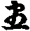智慧斷一切煩惱藏。此文證唯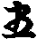解斷惑也。今大乘宗一往論之。亦有此義。而要論之者。空有兩境。智雙盡淨。名為空智。斷一切煩惱藏也。故一家宗假伏中斷。中伏假斷。中假俱斷。中假俱伏。亦得言。有解伏空解斷。有解斷空解伏。空有俱斷。空有俱伏。至而論之。假空有斷伏。中即乖斷恒伏。何故爾。解惑相除。正是假故。而前論四句者。一往開中假相也。問前云。若利根者。一華一草等。亦得是斷伏者。十信三十心等。亦得言名斷耶。答二而不二明之。如經云。初發心菩薩等三世諸佛者。發心亦得言斷伏。三十心亦同斷伏。初地已上皆然也。但初發心者。從凡以來。始向入畢竟不二心。名為發心也。伏心者。折有不有。折無不無。屈折動轉。無所平於有無等相。名為伏心也。斷心者。逈出有無等盡淨。離四句百非。名為斷也。此意正歆相除。兩相相望。故就假明也。若爾向入不二名為發心。屈折平相。而未明不都淨者。名為伏心。永淨者名為斷心也。故一家云。一往大意斷伏雖如此。經論中有四種名目。解惑相番相對論之。如正使見論與思惟二種。麤煩惱惑。於任十信斷意。從中發心已上。至六地已下。斷見思家習氣煩惱惑也。從七地已上。至第十地已下。斷二種無知惑也。故瓔珞經云。六地菩薩。即非想想慧煩惱。又第七地經論多云。遠離三界。故言遠行地。所以如此者。見思有二種。一正使見思。二習氣見思惑也。論師云。習氣別無知總癡無知。三種品帙齊輕。故一除道所除。今論不然。寧得無知同習氣輕耶。如身子等惡口與忽忽無知同品耶。問開善等諸師。約世法與若忍。道種終心與初地初心。解惑相並不相並。解不同。一開善舊相傳云。解生惑滅一時。而同言解生故惑滅。不得言惑滅故解生也。此解最儜。汝見諦上品惑。必在世法心邊。若忍明解心邊。終不帶上品惑。那得言解生時是上品惑滅。明同時釋耶。又汝言惑滅之語。目無目有。終是目有是惑有。向誚無時。不得與明解同時。如源品無明是佛斤斷無明。此無品無明。只得言金剛心斤帶。不得言是佛心斤帶。金剛心是前念。佛心是後念。那得同時。故解生時是惑滅時。此釋太無所以也。此義既然。為[絕-糸+禾]最後望初地。類此責之也。二報恩云。解生與惑滅。決定不得同時。只得言惑滅故解生。若爾惑滅當世法時。解生當次念苦忍時。故引釋論云。福將生時罪滅也。又正類因滅故果生等也。此師於彼[二/糸]宗。大勝前解。而終不離即常有斤同。汝解未有時。寧得惑滅於前耶。若爾此惑即不須除道。亦非相對除。什難則無量也。今謂具如前說。如成論師云。同時不同時忘法了悟。畢竟非時非不時。名為斷伏。何處解與惑有南斗。明同時不同時也。問若然者都不論同時與前後時耶。答不二而二。開之有二。一依釋論云。福充將生時罪滅者。名字同惑滅故解生。義理應然也。二由解起故惑滅。若解不生。惑則不滅故也。雖爾若解惑於却蒙。於無名相中假名相說。就假用明之。又成論等。有門同宗。以解即惑。必是現起。前解斷成就惑。今則現起解斷現起或。亦同言現起解。除成就惑義也。若悟中時非解非惑。而亦得言非解非惑。了悟非解非惑故。名為中即者。亦有此義也。問前云中假皆斷等四句相違耶。答彼四句明者。為彈片常途一向云。真斷假不斷故爾。若不二而二開者。從淺入深。一往相斷伏就假明之。若通而明之。四句如前也。此義後金剛心中具釋之也。又論師開善云。於五方便與三十心中。緣境前後釋不同。法師在東山時釋云。並緣虗假理也。中出陽洲時云。緣真不秤緣。近臨死時定云。是緣虗假理。何以故。故論四無礙智品云。外人問何者近法位世諦知。論主答云。望燸頂法中是也。又論三三昧品云。共分脩者。脩定脩慧。是世間三昧。世在燸頂法中是也。聖正三昧者。入法位即是若忍已上是也。故知五方便與三十心。並緣虗任理境也。虗假理即是世諦故也。彼宗若緣真境。出緣虗假理。解進不斷。退不伏。何者被導心行故也。若緣虗假理者。則伏亦得言斷。如報因業牙滅故也。今大乘明義。具如前釋。於真俗並得斷伏。非真非俗。亦得言斷伏。若畢意淨者。有何斷伏耶。於假名方便開。則無往不得說也。論師等舊云。世諦[狂-王+戊]法觀。以有解入空。若得空解現前。名為真法觀。則名為空解。若以空出有。名為世諦觀。即名為有解。向者若無空解導有解。有解即觸境生着。若從空出有。空解導不令着境。知世諦三假七灾虗任故。即不生着排俗入真。即是有解資空解。從空出有。即是空解導有解。空解即是空慧。有解即是方便慧。彼宗有解終異於空解。空解終異於有解。有方便無實慧。此方便亦被縛。有空無方便。此空亦被縛。如是縛。若爾豈是能斷伏耶。今謂須依經。先以定動。然後慧拔。因緣假名伏。假名因緣斷。故先以假破性。次因緣破任。如此即是根本清淨。即須中假度之。空是有空。有是空有。生是滅生。滅是生滅。若如此者。捶盪動轉。則名為伏道。空非空空。有非有有。生滅非滅。滅生。非生非滅。非空非有。此即是斷惑[宋-木+取]初入道之方法也。又一家作十鄣者。初地斷凡夫我相鄣。二地斷眾生身耶門鄣。三地斷無明暗相鄣。四地斷解法慢鄣。五地即身淨我慢鄣。六地斷微煩惱鄣。七地斷微細集鄣。八地斷除無相有行鄣。九地斷不能利益一切眾生鄣。十地斷一切諸法不自在鄣也。十地對十鄣。明之斷二十無明者。初地斷凡夫我相鄣。即斷二種無明。一者鄣一切法無明。二者潤三惡道無明也。問何意初地菩薩斷除凡夫我相鄣耶。答若是道種終心菩薩。猶有習氣。即雖二種我見。亦名生法二我也。問生法二空同論師意耶。答大異。大乘明義二諦並是生空。何者。二諦並是假故。若法空者。即是中道正法為法空也。若登初地。即能除麁習。即離我見得真生法二空。故言除凡夫習我相鄣入真聖位也。一往明之。初地斷二種無明。除凡夫我相鄣。而初地斷伏。實是無量。何正斷二種無明。除凡夫我相鄣。此是編舉一方為語耳。問初地何意斷凡夫我相鄣耶。答地前得道種終心。所以猒生死欣樂涅槃。捨生死之過。更求出離之樂。良計有我氣故爾。無我氣故。脩禪等諸行。安我置好處。猶我相氣故。名為凡夫我也。明初地則斷即離我見。得空無我真觀。即名為真聖位也。他家云。有此空無我理。可會之境。今則不爾。向者未悟。猶言有我。今悟不見外其所見云我。故言無我。何得別無我理可會耶。見即向見有我。名之為惑。今悟我無我。此即為伏。即是斷只名伏為斷。何處更別斷伏可得耶。約位明之。道種終心。未離五怖畏。只猶計我氣未洗盡。故有怖畏。今初地既得真空無我慧。不見有我可得。故離五怖畏名真菩薩也。問前明十鄣出何經論耳。答出相續解脫經云。斷二十二愚心也。初地斷二愚。乃至十地斷二十愚。一地斷二愚。即唯為十障也。[宋-木+取]後兩愚即等學地所斷。故經云。二十二愚。凡十地能過也。二十二愚者。一眾生及法計者愚。二惡趣煩惱愚。三微細犯戒愚。四種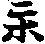愚。五欲愛愚。六滿足聞持愚。七正受愛愚。八法愛愚。九向生死背思惟愚。十向涅槃背思惟愚。十一諸行生愚。十二諸行相愚。十三微細相愚。十四方便思惟愚。十五微發愚。十六相自在愚。十七無量陀羅尼無量字句上上知慧愚。十八樂說自在愚。十九神通愚。二十微細秘密愚。二十一爾炎正受微細愚。二十二鄣閇愚也。問論師云。五方便與三十心等解所含相惑。故緣真不秤。今大乘亦同此說不。答並不同也。今只出諸師說不同也。一南澗云。非想九品相惑。入似解體也。而非想第九品相。是界外煩惱故。世第一法相。是界外無漏所斷也。今謂此意非小義宗。若爾第一法解體。無有被朵義也。二莊嚴云。見諦上品相惑既被伏故。以第二品已上相惑。並得入似解體義也。三法雲報恩龍光。傳開善義云。非相九品相惑。與五方便三十心。似解體相惑齊。若爾無間第一法。解體相惑。與非相第九品相惑恰齊。何者。非想第九品相惑。是起相之始。第一法相是相盡之終。始則從輕向重。終即從重向輕。故二處齊也。小乘明義。既始此雖彼大乘明義。解惑類此皆然也。今大乘明義即不然。無惑入解。無解含惑。但假名名字開為解惑。惑解因緣也。若未淨了悟為含惑。畢竟了悟時名為勉相惑。何處別有解體。而含相惑體。故不秤緣耶。今無得宗明之。彼智慧等。並是無明。故須洗除也。
第二論脩行。脩行門。成實論師釋不同。莊嚴聞脩功德。有十重。三十心中。初十心脩初地功德。於中十心。脩二地功德。後於十心脩三地功德。於初地中。脩四地功德。於二地中。脩五地功德。三地中脩六地功德。於四地中脩七地功德。於五地中脩八地功德。於六地中脩九地功德。於七地中脩十地功德也。此是約階級略言。次第然之。亦不全如之。何者正以空解為成地之要。所脩功德。未必次二行相隨故。如地前已脩十二門禪。三地後脩此法。則成無定定門。如之餘行類亦然也。今謂未必然之。如八九十三地中。何不脩功德耶。若言念念空有並觀者。即是脩功德智慧。何必言五六七三地中。脩八九十功德配之耶。開善門徒云。空有兩行齊進。只有有行長一品。所以金剛心菩薩。有中萬行等佛。未有空智一品。故名為等覺佛也。問初地菩薩三十心所伏惑斷却者。何德二行只長一品行。答彼云小乘不了教明義。於十五心中不出觀。彼大乘明義。初功品品中。出觀脩萬行故。終長一品而已也。但須深功德資發初地空慧故。其所脩品品多深也。今大乘明義。具有四句。有解多與深。而空解上與淺。空解多與深。而有解小與淺。有解具有多小淺深。空解無多小深淺也。如一中解無量。量量中解一。但一中解無量等。約有行空行開者也。但一往宗途明之。有行多功德資發空行也。若約多根性論之。如單複中假出入無定也。開善云。空行長深一品。故無明住地佛菩提智行斷。如夫人經中說也。問定行同慧行者。小乘聲聞慧有三。定亦例不。答此充例。今且依論師云者。三種聲聞。一充聲聞。此即充定慧。二義聲聞。此即義定慧。三名字聲聞。即名字慧。故聲聞人有得八定慧有不得八定有也。
第三明得失義有二(一明得失。二說並觀不並觀。第一得失有二義。一明內外凡。二說三退)。且前論階級位虗所定。然彼論得失也。階位諸說不同。若欲見十地。本業經與持地經。明十地義[宋-木+取]分明。又十地經與十住經。本業瓔珞經。仁王經等。悉辨十地也。具如大意中一一引意。今更明出也。護國仁王經第三品云。地前習種性。性種性。道種性也。瓔珞經云。初十心為習種性。中十心為性種性。後十心道種性也。又此經云。乃至有六種性。何者。習種性。性種性。道種性。聖種性。等覺性。妙覺性。前三性是地前位三也。後三性是初地已去是也。持地經。地前有二種住。一種性住。二解行住。又明種性云。略有二種。一者性種性。二者習種性也。諸法師取文意云。從具縛凡夫以去。自能殊勝者。名性種性。性不改故名為性。習解已成不改為惡。名為性種性也。若脩行所得名為習種性。亦不言兩性高下也。又持地經。分解行以為三忍。謂下忍為初十心。中忍為中十心。上忍後十心也。又云解行住是初發心。未同淨心地。淨心地即是觀喜地也。論師分位如此也。今謂初發心心有中假三種發心。一者二諦觀中明之。即是無所得徧行六度菩薩發心也。二者具中假觀為發心也。三者通五十心為發心也。故言解行住。是發心。但釋初發心。未得淨心地。有兩義。一是初發心。具中任。為淨心地。二是三十心未得初地觀喜。故言未同淨心地也。如持地經云。二種之解行位。則別名五十心。為解行者。即通三位也。問內外凡夫位何者。答地攝兩論。成毗二家。釋不同。一云初六心已下為外凡夫位。從七心已上為內凡夫位。故瓔珞經本業兩經為證。二經同云。身子於第六心中退為小乘。至七心便不退。故退為外。不退為內也。二云初十心為外凡夫。中十心已上為內凡夫位。故菩薩斷結經云。有十二賢聖人。云中十心為性行人。後十心名為解行人。以十地為十人。合二人為十二賢人。經說不數初十心人。故知猶是外凡夫位也。三諸論師等多云。三十心並是內凡夫位。類小乘五便內凡夫位也。故持經中。四十二賢聖人云。初十心為習種性。中十心為性種性。後十心為道種性。又十地足前三十心。金剛心為等覺地。佛地為妙覺。故四十二也。又所以知三十心是初地前者。大論第二卷云。三十心並是地前方便位也。又此位中已能厚習善根。脩諸善行。善習助道法。供養諸佛。習諸清白法。為善知識行護。具如斯法位。無容退轉。故知是內凡夫位也。又四依中一衣故。是內凡夫位。十信發心位。是外凡夫也。今大乘明義。山中舊云。從十信反心已。是內凡夫菩薩位。其已能八相成道。為天人作師。故大經及迦葉最後卷七言偈云。發心畢竟二不別。如是二心先心難。自未得度先度他。是故我禮初發心。發心已為天人師。勝出聲聞及緣覺。如是發心通三界。故亦是初依人也。大品三慧品亦云。從初發心行彼若此經豈非從初發心行彼若也。問小乘五方便是內凡夫。具如成實論中說。大小相准望。充如彼師說耳。答不例。小乘中引不了教。寧得相准望耶。小乘中一生得道者可准望。大乘亦得一生得道耶。今大乘意。十信位中已能八相成道。已證正法波若。寧得猶秤外凡夫耶。今一家意中。十信前如偏行六度菩薩未得正法波若。唯得二彼無行得用波若。為內凡夫。如無行同二乘人。亦是無所得。契內二乘。故大品經大如品云。有六十菩薩。於五百佛所。行六波羅蜜等。具行萬行。而無方便故。實際作證。故不得入菩薩位。亦如勸學品明。有菩薩摩訶薩。無量劫行六波羅蜜。而不入菩薩位。亦不入聲聞位。此等並是彼十信位人等也。問若爾兩品明菩薩無行得菩薩耶。答亦非無所得菩薩。今列意者。彼菩薩位。至二諦空中准望論之。亦是有所得故。從是外凡夫位故被破。如地攝等四家菩薩也。今謂就十信前。未得二諦假空無所有。為外凡夫位。得二諦任空有所無無所得。為內凡夫位也。故大師云。未得彼空。有所得行行。如地攝四家人。若迴心值無所得善相識。專學無所得行行。如入無所得者。即是外凡夫入內凡也。又以此外凡。行無所得。得入十信無所得位。雖得入十信。由前無便方便。行行故。雖入正位。而猶有明昧。故開為十地。若未得二諦任空時。無量劫行無所得人一人彼十信位無量劫行行。利根者。即便頓斷眾惑洗盡義。故經云。不在涅槃。不在生死。亦不由妙覺等覺入菩薩。又經云。一念相應慧。斷無量煩惱及習也。經意亦是初發菩薩也。
第二論三種退有兩(一明三種退。二論墮頂義)。所言三種退義者。釋三退位。次第亦不同。招提云。位退行念退也。今謂行位念三退也。又釋。位退者釋不同。一云地前第六心已下退位。聲聞或退為凡夫也。故彼云。三十心中。第六心。猶有三塗業。牽生之業未盡故。墮三惡道。連羈不絕。若第七心只有報果。無復牽生業。勉三塗之業也。二云第六心已下。但退為二乘。不退作凡夫。報恩所說也。三白琰法師云。舍利弗於第六住退者。十住斷結經第七品身子自說云。或曩昔在坏器時。或從一住至五位。復還退墮。而在初地。復從初住到六住。如是經歷六十劫中。竟不能到不退轉地。今取此文。身子於六住退。非六心退。此謂六地以為六住。开文正明。七地為不退忍故也。今謂不然。彼師等定執經中心與住及地三名。安處所故。一師或安下位中。一師復安上位中。故作此說。終是着名隨相耳。諸佛及弟子不着名不隨相也。經中或三十心位中作住地名說。或安初地已上等說。故或上或下。須得通途意也。故一家舊判。十信發心中。前第六心已下退為二乘也。故瓔珞本業經云。淨目天子法才王子舍利弗。不能入七信者。正是十信發心位說了。何以知之。十住斷結云。身子自秤云。我昔在坏器時也。今謂十信前得二諦空位中退也。本業經云。退入外道。起大耶見。及作五逆等。豈非初發心前具縛凡夫菩薩汎明之也。若得中假十信位。與三十心菩薩。及初地已上。更造大耶見等。無有是處。初發心菩薩已能八相成道。為二乘作師。豈更起大耶見等。但一家舊云。初地菩薩生在佛家。不離諸佛。豈更造五逆等耶。且約今政明之。如彌勒菩薩。是初發心菩薩。而為阿羅漢等之所禮敬。豈更起五逆耶見等耶。問若爾十信位中。如彼經說是下劣凡夫耶。答從來學有所得凡夫。遇大乘法門。悟無所得正道。而猶暫時起有所得心。名為起大耶見等。故經云。寧起五逆四重等罪。而不能起有所得心之斷也。今謂十信前。開作十信。明之不開發心十信。如仁王經云。三十心中。初十心為十信也。毗曇家云。調達得燸法已退大耶見等。論師釋不同。一云五方便中。有此義。終是數氣。二云五方便前蹹行觀中起五逆四重等罪也。問此菩薩退為凡夫耶。答大乘明義。或可暫時起更還正道。此菩薩異法有故。終不為凡夫也。問三退配於三位。其相何耶。答不二而二明之。行退觀假。初發心位中。第六心已下。一家舊云。中發心中前第六心發心已下。位退。亦於第六發心已下。亦婫之念退者。即七地初忍已下婫之也。故經云七地菩薩愛佛地功德。不名無煩惱也。問三退退相何耶。答行退者。已伏煩惱。種類更暫起。名為行退也。位退者。退起作二乘位心。名為位退也。念退者。七地初忍菩薩。所未斷煩惱來現前。名為念退。若爾七地初忍已下有此義。中忍已上則無也。問行退行因緣故退。答如經中說。有四事故退。一者久習放逸煩惱因緣利故退也。二者久植愚癡之業。親近有所得惡知識。故退也。此二事。師云有所得學問等也。若造十惡等事。不足及言也。三事見王等多生怨家讎[恪-口+各]故所以退也。四者資財不具足故退也。如大經。迦葉問佛。若利根者。何故不現般涅槃。佛答為不具足故。所以不般涅槃。若爾為多有闕少。故所以退也。位退者。如瓔珞經云。大士退也。大士所以退者。行菩薩行時。天帝釋見菩薩行行有真實堅因以不識之。一時化作婆羅門來乞眼。行菩薩者。不逆一切眾生意故。即排眼童子與之。婆羅門亦得眼童子。即擲之脚蹹破之。法財王子即念言。汝既無所用者。何意就我乞眼。得眼即蹹破之改何益。眼是導行之主。眾生難化。即起退心。我不復行菩薩道。我退作二乘自調自度也。若至七心。即充不退也。念退者。如十地經云。七地菩薩愛佛地功德。不名無煩惱也。花嚴亦云。三界煩惱盡故。不名有煩惱。愛佛地功德故。不名無煩惱。故念退也。今正取未斷煩惱來現前。名為念退也。問此菩薩行已深。何意起此念耶。答論師說不同。一開善門徒云。引接名字明之有二乘。故經云。有三種意生身。何者空解萬行相資。乃同二乘人。不脩萬行。云何得空解斷三界惑出界外耶。又此菩薩雖斷正使已盡。始出界內。未得空有並觀。鈍根菩薩。有時起愛佛地功德。或時樂沒空時也。二者有實行二乘家。即是莊嚴等門徒云。不唯鈍根。無方便菩薩愛佛地功德。亦是聲聞等二乘斷三界正使盡。往生反易生死時。聞佛無量功德。即生愛佛地功德。又此菩薩正就有行明之。初地至第六地。猶有退轉。以正使未盡。萬行難精故。從來所脩之法。或有已得勝品。而須申退勝品。名為墮頂也。或復入空無相無作等生法。名為着空也。報恩亦同此說。故華嚴經云。七地菩薩者。寂不脩萬行。故諸佛來摩頭勸發。種種教化。汝未得無量法門三十二相八十種好。發起萬行。又楞伽經亦云。七地菩薩着空故。十方諸佛七過來摩頂。勸發萬行。同前經文。釋論第十卷云。七住菩薩觀諸法空無所有不生不滅。如是觀已。一切世界中。心不着。欲放捨六波羅蜜。入於涅槃。爾時十方諸佛。放大光明。照菩薩身。以手摩頭。語菩薩言。汝勿生此心。汝億本願。欲度一切眾生。汝未得三十二相八十種好也。又夫人經亦云。無漏業為因。無明為緣。能生聲聞辟支佛三種意生身故。定有實行二乘人。若無實行人者。七地菩薩無容無三十二相八十種好。改着空寂。不脩萬行。始欲捨六波羅蜜入於涅槃也。若如開善云。實無二乘者。而諸經說者。皆是跡中為物引接故。此釋不成語也。真諦三藏自性責開善云。彼國中無有人言無實二乘者。汝自輙言。無有實行二乘。故三藏師引夫人經云。三種意生身。即是聲聞意辟支佛意菩薩意生。於變易生死中。今謂通而為語。亦有二乘。亦無二乘也。言有者。佛隨緣方便。彼名字開三乘。故有之。故經云。除佛方便說也。言無者。無如四家說七地中會三乘故。一家云具四句也。問如斯三經一論等。著寂菩薩等。若為通釋了。答大乘無所得義通云。如地攝兩論成毗二家。有所得無方便菩薩。難改迴心入正道。而由前無方便行行故。至七地時。猶見思惑習故着寂。不如法行行。故諸佛來發起。汝等未得真三十二相八十種好。若小小分三十二相八十種好。如初正八相成道三十二相八十種好並有之也。問中十心中。自有頓斷煩惱。不由等覺妙覺究竟涅槃者。七地已下菩薩等。寧得有着寂不脩萬行。為諸佛來種種發起。頓如此差降耶。答正是前時有方便無方便行行。故須如斯。則與鈍差別。如釋迦文。久已成佛。無有一切煩惱。而尚受九報。今煩惱未盡菩薩中。自有着空。而不着空何疑了。問釋迦文久已成佛。而為一切眾生。方便受九種報耶。得相例了。答久已得種覺。猶尚為物九報者。煩惱未充菩薩。自有由有方便無方便行行故。上七地下有汎空不汎空。何須疑之。無方便地攝等諸家。好有此疑也。故手德楞伽[冰-水+居]經云。一一地中。逕百千大劫。方本一地之行。軟根不在其數。故知初地已上。並有利鈍。鈍者即是前無方便行行。故至七地。自有沈空着寂故。諸佛來發起也。問如真諦三藏云。與諸論。師釋六地與七地中。為二國中間也。答今大乘義不同彼說。今謂假十信與中十信。中間為二國中間。難可過度。即是分段。與反易兩種生死為中間故。一家舉譬言。有南北二國中間。如大江五十里中間。復有清江與監察故。難可通度。正意任十信中雖斷正使盡。而轉入中十信為難。亦是正使雖煩惱而為習氣故。萬行難精。故從來所脩之行。或時勝品而須申退失。劣品名為墮頂義。或改入空無相作等生法心。名為着寂等。如前說也。若從凡夫來依偏學無所得者。一入假十信時。復進得中十信。即成種覺有限。故得中十信已上。至七地亦無有着寂沈空者也。故大經云。八萬劫到。六萬劫到。四萬劫到。二萬劫到。十千劫到。如此等人。並是利根者也。鈍根經無量劫。方成一任行也。亦有人言。多經論云。七地着寂。是三乘共十地中七地。非菩薩獨十地中七地。又言餘經論言之。或可是如彼說。而華嚴經語。豈是三乘地意。彼經未明二乘事。云何是耶。但華嚴經中。雖未說二乘事。而理中明十地相。唯望斷正使盡。出反易生死中。受生二乘事義。故記而明之。經兩意不相違背也。亦是解脫月菩薩請說二乘法故。充有二乘。但彼經來意。亦未盡也。三今說釋迦教。對舍那教明之。釋迦具有但不但教也。舍那所說教不但教也。舍那教中。直明並諸微塵世界大小緣事。如釋迦說西方事。非是舍那緣事也。故金剛藏菩薩為解脫月菩薩說法文言。此中不宜聞二乘法。所以不說小乘教。教解脫菩薩請金剛藏菩薩云。此中亦充有堪聞小法有利益者。為說之。而文不見說。故一家相傳云。雖請說。而不說故。無有但教。亦無二乘。何勞說也。而觀世音菩薩授記經云。釋迦佛光明至時。三乘人同光來事者。一家判云。迴小入大二乘有二義。一實是菩薩。仍歸本名為二乘。如法花經云。已授記三乘。從本為名聲聞也。二無所得二乘。亦不妨但無。有攝地兩論成毗二家二家但者也。彼經與論等云。七地菩薩着寂等故。諸佛來摩頂發起事。四家定執安置高下。故須更料簡之。今割空着別明之故。開合散束。不相妨意故。七地着寂。且初發心着寂。寂且初發心着寂。即是七地着寂。初發心明了。即是七地明了。七地淨了。即是初發心淨了也。故華嚴經云。一微塵世界。即是無量微塵世界。無量微塵世界。即是一塵世界。一多多一等也。如支楞伽經云。初地即是第十地。第十地即是初地。初地即是第八地。第八地即是初地等也。而經論中。偏約第七地。明着寂等故。諸佛來發起者。開不二而二論之。第七地是斷四住地習氣盡。出七地入八地等事。故經論中多約七地釋之。此釋意。地攝等四家。二見難受信。若得大乘無所得意者。任運義理說也。問三退位定有高下耶。答不異而異明之。亦得高下。異而不異論之。初行退即是復念退。復念退即是初行退。位退亦然也。三位開善云。從凡至聖。階位高下。略分為三也。一具縛凡夫位。二善惡供位。三性地位也。此三位並是初地之與凡聖成分別耶正也。從凡聖與未登初地。約發菩薩心。略有三階級。初二是凡夫位。後一是似聖。似聖有為內凡夫。前具縛供位名為外凡夫。於外凡夫中。復有二也。一有見眾生已立。而未有一念勝善心。名為一立也。二有善惡供位。此位之人。雖復[沉-几+夫][洽-(一/口)+酉]要有歸期。故從具位之供位。性地者既入正定。即是高[(冰-水+日)/(小-(丁-一)+ㄎ)]善根已不改。退斷善根也。今大乘明位不同前說也。就無所得善根假中分之。自從未曾得起向無所得善根已還。名為具縛凡夫位也。自從是大經念向無所得善根已上名。為善惡共位也。即是大經云。從值凞連河沙佛。未滿一沙已還。階位之末。此中人法悉名為共位不定聚。亦是暫出還沒位。以耶正善惡為體也。若曾值一熈連訶沙佛所。發菩提心。名為性地也。故經云得十六分中一中道分[彳*又]方是發菩提心位。如五種菩提心中說也。具縛位。流轉無際。無有出期。故具縛也。所以共位者。凡有兩共。一者下同具縛。二者上同性地。所以然者。行位雖有高下。值緣即諦法還成具緣也。不失念時。乃吇三十心。十地方便故。與性地同也。故大經云。譬如有人出家剃髮。雖未受沙彌戒已墮女。若有發心始吇此經。雖未階位十地已墮十假安中。故知與性地共也。故知還同。具縛假者。菩薩戒經云。性地菩薩。始能不謗法斷善根。故知共位人備秤具縛也。此人名為信根菩薩。亦名假名菩薩。所言以假名者。非唯道心未是似解。亦改迹立。今曰菩薩是非假立也。大品經亦云。輕毛菩薩。譬為名。解行未深。多生退轉。有似毛之隨風東西也。大經迦葉品云。菩薩有二也。一者假名。二者實義。此目假名。與本業經名目同。故言名字。即是輕毛不定。故名字說之耳。分別耶正善惡者。若具縛唯耶無正。若性地但正不耶。共位者耶正兼有。善惡具行也。高下昇沈者。具縛之位。唯是沈沒鄙下流轉。無際不出也。性地者。既入正定。則能高昇。善根已立。不改退斷善根也。共位者可上可下。亦昇亦沈。暫出還沒。故不定[穴/取]也。大品經莊嚴品云。畢定眾中干慧地不取安故。起期望故。不定位也。問性是三十心中明之。寧同於發心中明耶。答多二義。一是發心當躰是性地。二是從三十心向下[打-丁+(改-己)]十信。亦是性地也。問性是何義。向三十心十信明耶。答性是不改義。而有二種。一者解假性。二者解中道故。發心以上明地性也。依大經。有洹河七種人中。初三種人即是三位人也。一常沒人。二蹔出還沒人。三住人也。常沒人者。起耶見一闡提等。趣向有所得。皆以重惡自沈沒。不能出生死。故言常沒也。蹔出還沒人者。若遇大乘善知識。發菩提心。故出生死。求生信心正見脩善。若經生。若遇有所得惡知識。還起耶見。斷善根故。還復沒。或昇或沉。故言暫出沉人也。此兩人。必是出家人也。住人者。安立無所得善提。是第三人。如師子吼品云。小乘四念處燸法人。依迦葉品。小異。如佛性義中說也。無所得善根已立。求不復斷善根。不退起耶見等。名為住理人也。又大經云。三種病人者。即此三人也。何者解不同。一云初具縛凡夫者。不可除必死人為具縛耶定位也。遇退醫得差。不遇即不差者。共位不定人也。斷自差人即是性地人也。二云若未立信根。名為必死不差人。為初人也。若初發心。至第六心。差不差病人也。第七心以上自差人。不如前說也。又諸經論中有三種名。一耶定聚。二不定聚。三正定聚也。解此三聚位。開善云。耶定者起耶見。失正理。遇或之名。亦言耶定起心定執劃計也。不定者。或正或遇善知識。信三寶四諦因果。信善現前。即是正見。正見未善安。還復失忘。遇緣謗法斷善根故。復生耶見。故不定也。正定者信根已立。習善安立。不謗正見。不斷善根。故名為正定也。其位亦同前具縛等三位也。今大乘明之。亦同具縛等中三位說也。通稱聚者。有二義。一聚集義。二類義。亦是同義。同類而聚集。如方以類聚也。凡[尸@報]有所得耶心之位。是類者悉入耶聚中也。不定正定亦然之。又具縛共性三位。此別名者。具者備有有所得。鄙劣故。以鄙法所成也。夫者是行者通秤。若凡等庸劣所成。即是庸夫也。共位者。善惡相兼。未決之名。若化緣善。其位未立。善性成故也。耶正亦猶未決定。雜一切善惡故。共在一位中也。性者不改故名性。習性已成。不改為惡。信根安立。能生諸善。故言地也。通秤位者分尊卑高下。各自處也。作如斯明者。大都得無得大判之。若細論之。如前釋也。地攝兩論。成毗二家。一切善惡。無非具縛。並是理外故。若學無所得心想。依諦向不二者。亦是共位也。十信位中釋不同。一山家舊云。中十信中。前六心已下。亦同言共位。從七心已上性位也。二云假十信中。前六心已下共位。第六心已上性位也。又山家從多約菩薩位中隨名分位之。略有三階。一者七心上名為入不退法。二初地已上名法位。亦言阿鞞跋致。至此處即生在佛家。如前引經論釋。初地文中說也。三者七地名為法位。亦言阿鞞跋致位也。發趣品明。七地名為等定慧地也。故大論云。前三地慧多定小。後三地定多慧小。不能入菩薩位。七地已上定慧均等。漸得種智。名為等定慧地。此意亦是教門明之。菩薩初發心。萬行但進。至七地方等二門耶。又須知之。小乘二十七賢聖位。今大乘明之。撮合為十信位。故二十七薀在其十信中也。
第二墮頂[打-丁+(解-角+?)]義。所言墮頂者。大品經勸學品云。菩薩摩訶薩。不以方便行六波羅蜜。入空無相無作三昧。不墮聲聞辟支佛地。亦不入菩薩位。是名菩薩法生。故墮頂也。此經文意說不同。[俎-且+馬]法師云。六住中空心為頂。有心為墮。以六地終心正由空解故。出離二乘也。岌法師云。七住空心為頂。有心為墮也。七地之始永離二乘故。六地以還未勉二乘。故言墮。故釋論云。從忍無生忍中間名為頂。故六地以下。從忍七地已上。是無生忍也。通法師。六地[宋-木+取]極為頂。未登為墮也。尚禪師云。三十心極處為頂。登頂即入初地菩薩位故。大品第三卷勸學品云。不以方便行六波羅蜜。既言不以方便行六波羅蜜者。未得真解故。無方便猶存著。所以不得入初地。又不墮二乘地者。二乘獨善為境。今大士久行六波羅蜜。欲來作佛。不墮二乘。但滯著心故不得登初地真位。故法生故墮頂者此習解未熟。未稱無生。於一切法猶起著心。故言法生也。若深廣心秤獨成菩薩位。來不退二乘也。招提云。七地無生法。即為頂。是六地之上。決定入七地之心。以起取著之名為法愛。于時不能至頂故。必不為二乘。進退無授故名墮也。今謂釋論第四十九卷。直云頂空從忍。無生忍之間地前。為從忍。初地已上。為無生忍也。今觀經論意。起有欲心為墮。無欲心為頂。故經云。菩薩不方便行六波羅蜜。入空無相無作等故。法生。故墮頂也。若爾菩薩方便行波羅蜜迴出凡夫二乘有所得菩薩相情之外名為頂。非方便行六波羅蜜故法生墮頂。如地攝等四家菩薩等也。若為位論之。前三退即是墮。非前三退即是頂也。故大品經差別品云。得無所有已。見一切法空。四諦所攝法皆空。若見觀是時。便入菩薩位中。是為菩薩位。性地中不從墮頂。用是墮頂故。聲聞辟支佛地也。而諸法師多用六地心終為頂。或言七心初為頂。約位明頂者。觀經文意。應是六地終心為頂也。大陌而論之。八地以上無生寂滅忍。入法流水。無功用心。無改有念。故無念退也。釋論云。登第八地。第六地中增退中云。六住退得無生也。第八九位入法流也。
第二明並觀不並觀。釋並照不並照具如二智說也。今略出之。而說者不同。一云八地已上。始能並照。七地已下未能並也。二云六地已下。悉未並照。始入七地已上皆並照也。三云中忍已下。未能並照。七地上忍已去。一向並照也。四招提云。三階明之。一六地已下一向不並照。二八地已上一向能竝照。三七地或竝不竝。澤於七地。以為三階。一下忍力微弱。竭力即竝照。二中忍漸勝。竝照轉多。三終心一向能並照。仍入八地位大寂也。五開善云七地中三忍。下忍失念。亦不並照。中忍不失念。亦未並照。上忍得並照。八地任運行也。六寶亮法師云初地已上已能並照。地師亦同此說。故彼師云。取仁王經意云。初地並照。八地已上任運自成美其勝同名耳。今大乘明義。初發心中十心菩薩。已能八相成道。即能並照。如仁王經說意。復必須識。徧圓橫竪之立。既能並照。無故入空。出有異時。但為化緣。宜現入定出定入觀出觀等也。若爾非直真俗並照。亦就俗中法法並照。就真中如十八空等並照。一中解無量。無量中解一。如是橫竪總別。無不滿足也。琰公云。七地菩薩。定有並照者。終心一向能並。正是斷習氣。極品明心與有知並也。下忍並者。必是溫故。空心與有知共竝。斷或之心不能與有知竝也。中忍之心自能屢竝應。多是溫故。空心有知。得並。斷或之心小能爾也。正以什公肇公等。多七地自動而寂故。今推斥七地為三階之辨也。開善意亦略同此意。但上忍明之也。今謂多種之說。並是正入發心。向入發心。觀行未調利時。學方法得有如此義。已入正位時。任行亦有也。但什肇兩師。多徧約正使盡明之。大意同今說也。又彼師云。發照七地上忍。悉羅發照初地已去至七地中忍。亦得反照。但不恒反照也。大勢並照義類之。從淺至深。反照之力。轉增進也。於初地已去至七地中忍。乃罷反照。我是某地。已得爾許法門。無若干煩惱也。六地已下不能自於空心知入其地。至若干品七地已上。則能知如向空有並照也。今謂亦如照初發心菩薩已能反照等也。成論師解。並照鄣不同。一云別有無知鄣也。二云無別鄣。但有緣由之鄣。良由或多知弱故。不能照。或小知強故能照。直是多智竝生便無別照。故無別鄣也。今謂未必一向爾。若不二而二論之。一智照多境。多智照一境。多智照多境。一智照一境。境發智亦爾。照義既多種。鄣義亦應有別者也。反照智解亦不同。一開善云。照青之智反照照青解也。二龍光云。別有智智但自反身反照如是無窮反照也。若爾一知知青。還以此知此知。如開善者。鄣亦說有別無別不同境別。故有別鄣。還以青智反照故無鄣也。龍光云有別鄣也。今明不二而二明之。並得兩說。但名字同意異也。論師云。小乘之人。有高位利根者。有中則得照一切空心不能與有知並也。中乘人。於有中並照。溫故空心。亦可能與有智並。照如大論云。或侵習氣。與七地下忍相似也。反照亦可。如論云凡夫總相自緣名為反照。如定行自反緣住得。如菩薩別反照則無也。今謂初發心菩薩並有之。若菩薩二乘亦菩薩一種也。如成論師所明。三乘別異。善根人捨波義論之。如彼說而已。今大乘宗望彼有所論都無之也。
第二雜簡。
問何者功德智慧莊嚴耶。答且弃功德與智慧兩門。不二而二明之。依大品經第一卷序品。舉萬行與萬德境智等。勸學文意。依一種開八段意攝法無不盡。[宋-木+取]後結云。欲得功德如是者當學波若波若。波羅蜜者。正法。波若為本。所開三乘觀。與三果并境智等為功德也。正法波若之實非功德智慧等。而舉末用目之。亦得言功德智慧等。所開六度為功德。就功德中。開為第六度為智慧。五度為功德。并造境生為智慧。如善靜為功德等。並得之也。又大經第二十五云慧莊嚴者。從一地乃到十地者。或可舉正法明之。或可舉第六度說之。福德莊嚴者。謂檀波羅蜜乃至波若非波若波羅蜜者。舉任明之。今謂福慧慧福。因緣語耳。而六行中分之。前五度是福。第六度為慧。又第六中。分有分為福。空為慧。故經云波若非波若波羅蜜如前也。問若為是大莊嚴與大莊嚴發趣耶。答釋論三空文云。大莊嚴發趣大莊嚴乘於大乘也。又云。菩薩行檀波羅蜜乃至波若波羅蜜。能捨內外財物。而行猶存有吾我。所以未得生空。直名為大莊嚴也。若菩薩行檀波羅蜜。罷捨內外所有。無有吾我之心。即得生空。名為發趣大乘也。復次菩薩行檀波羅蜜。乃至波若波羅蜜罷捨內外。忘三事。畢竟淨具足生法二空。故名為乘於大乘也。釋論第五十卷云。初地至三地。慧多定小。未能深攝心故。四五六地。定多慧小。以是故不得入菩薩位。今生空法空定慧等故。能安隱行菩薩道。從跋致地。漸漸得一切種智地也。論師釋此意言。定慧。以正觀空理理靜為定。有中分別知為慧。如成論止觀品云。分別陰界等心為觀。會真我之心為止。立名各取一義也。又就此一說。分為四階。一初三地照空心小。照有心多。二四五六三地照空心多。照有心少。三七一地兩勢齊。而猶牙起也。四八九十三地。兩智必並照。念念寂滅。所以然者。見諦之或。品數本少。非止可略。此欲界思惟而先在三十心。今中已伏意故。今就真觀斷之。不煩多力故。初三地在真觀心少也。脩行之意。本為濟物。既已成聖。無客獨善故。多出空觀。權智恐度人。致令有心。心起甚段也。此言小多。是依前空說。非與奪之意也。四五六地仍前以來。多起有智。資此入空。空心長久。以四地所斷。是欲界思惟等。於見諦或。品轉細細。故難斷。愛著人天。彌難捨。雖五地所斷。是色界思惟。有四禪繫縛。於諸禪定。易起味心。兼以轉細。彌更難。遣六地所斷。是無色界思惟。有四空轉縛。此或轉細。起味心彌多。故斷或心多多須數數入觀。謂為多也。有心小者。四地脩道品。五地習五明。六地論觀因緣。此則有中觀行。亦殊不小。不客高位泏有。反小前三正皆此三地。空觀心小。有行必多。今則空觀心多。謂有心稍少耳。空錄六地隣於七地。七地空有稍均。謂之定慧平等。六地未能相及。故存小多之秤。然空六地。以前猶亦多須泏有也。例如大經第二十八云。十住菩薩智慧力多。三昧力少。聲聞緣覺三昧力多。智慧力少。故不見佛性。此義意言。十住菩薩受法王位。兩復為眾生雨甘露法雨。常有分別故。智用則多任刀者。空未餘求進。故言定少。此皆義言之。非是定說。今於六地以前。多小之義亦充爾也。二乘分內。但念脩空。於菩薩神力心不喜樂。如法華經中說。義言定多智用少也。七地之終。脩習萬行。大段已脩。故云七地定慧均平也。七地所斷之或。或品與見諦思惟正等故。斷此細惑。空慧轉多。備脩萬行。必具足故。有中福慧。甚亦倍多。空有二行俱多。而大略相類。故云等也。七地之終所備略具。次入八地。念念常寂。八地文云皆乘船入海。為譬船中所須。事事已足。故任力待時。自去九地已去功德亦然也。今謂無為法中。而有差別。亦有此義。而未必一向。如此理而論之。菩薩一證中道。必脩萬行俱進。如仁王經云。初地一念具足八萬四千般若波羅蜜。載為摩訶衍。乃滅為金剛。亦言定。亦言一切行。如是廣讚波若波羅蜜中說也。大論云。定慧者。隨義一往論之。何者依瓔珞經云。欲界見思惟習。或前三地菩薩。斷上二界見思習。或後三地菩薩斷故。定慧各有二義。前三地慧多定小者。一者隨所化眾生處。菩薩於見思惟習之地。定淺小難用。故言定少。而有中分別。行易而多。故言慧多。如于慧地也。二者汎論初入道。必入空為[立*(而/而)]。亦是道與俗反故平於諸法為正道專者。此心故言慧多定少也。後三地有二義。一者色無處眾生多者靜心。亦是定深。而易用故。菩薩隨并者。定為意故言定多。而有中分別等小故。言慧小也。二者菩薩因諸禪定諸神通。行十二門禪等。故言定多慧小也。故須假諸廣之。又不唯隨所化明之菩薩。自行明昧多小。亦得大論說也。又古舊云。人地已上斷或不同一糸。次南法師傳述。舊云。八地已上念念斷或。亦不須諸佛來開化。何以故。念念入法不出觀。寧同被開道耶。而經云。諸佛來摩頂勸發起者。聞是迹中為物故耳。二云。止同言空有並觀。寂無出入觀。故言念念寂滅常居法流水耳。八地已上去佛劫數甚多。猶須感佛。而俱得開化。不容都無。所待念念進行也。故漸備經云。第十住菩薩。猶須承佛威光。得百萬三昧。故知猶夜化無容念念自斷。或進行也。今謂八地以去。亦須諸佛開化。既是未淨之地。無容一向不須開道也。故經云。初地不知二地境界。乃至第十地不至如來舉足下足也。亦是大頓悟家云。至第十地。始見無生。小頓悟家云。至七地始見無生也。又七地菩薩諸佛來摩頂勸發者。至第八地。不容一向頓不須待也。經云。念念常寂者。如經云。不起滅定而現諸威儀。心意識亡。幻化無心。於彼此而能應一切。名為常寂。何時導有心神。常在觀不出觀。名為常寂。若七地已下有心神躰。出入觀耶。理而論之。初發心時已。平於諸法。心意識等。如虗空幻。化人無心於彼此。此是彼非。而約動為散。為出嘿而為靜為入。於幻化人。動靜無二也。菩薩一證正法者。動靜即是用也。住大涅槃建立大事也。故經云。初發心畢竟二不別也。而經云。八地已上。常寂入法流。七地已下有出入觀等者。欲濟物故。習氣充淨故。割折空差別明也。諸菩薩非靜非動。能靜能動。非出非入。而能出能入也。故雖開之。無纖豪之別。具如前說也。又論師云。於十地中。利鈍分判三品明也。一初地至六地灼然有利鈍如二乘也。二七地亦有利鈍。而轉微相。比不堪懸絕心有二種也。三八地已上說不同。一云學功已備。念念自斷或。故無改鈍。唯利一品而已。二云七地學功備者。此是大數言耳。然空得此法時。猶有徧觀。故有遲速。八地已去無容念念斷或故。則捨一念。猶有多少之或。此人數十剎那溫故。未進斷或。故品段亦無定也。若七地之終功行始弁故。八地以去遲束必不懸絕。而則異於七地。所以開三階者。彼師云。六地以前。猶斷正使。所脩福慧。未央成滿。故此彼神道異故。有無量遲速心不等也。七地正使已盡。唯斷習氣。備脩萬行。大段粗周。故遲束之相就咸也。八地餘習已斷。止斷無知。常無出觀。故利鈍相微也。龍光云。七地已去或斷二性。或三性煩惱。而習性不同。故微微有遲疾行也。又就遲疾。雙約定慧。有三階明之。一者六地已下同定發慧。或以淺定發深慧。或定發淺慧。如二乘所宜不定也。若大士之行。六度俱脩。不同與二乘正為空解。故得深慧者。定則心深也。开餘諸度類之。而开力多能能於淺定發深慧也。二者七地菩薩。於師子奮迅逆順超越故。能從滅盡定入散心散心直能入滅盡定。此是溫故之慧。於定門利者。力能如是。若是斷或之心。多用勝定。入於深慧滅定解不同。一云空解義枰滅定。能從神通說法動轉事心能斯靜也。二云是滅定。以此定起說法等也。三者八地已上。常以深定。與深慧共俱。亂心久盡。故定慧俱進。但遂慧言之。故成遲疾也。四等諸度其鄣亦已文亡。當其分限。階品品齊。進亦逐慧品言之。以成遲疾也。今大乘明之。不二而二。開差別明之。悟心有明昧論之。兼有論說故。彌勒尊者。摩德勒伽藏經中言。如是於一一地中。逕百千大劫。有成一地之行。軟根不者开段。故知初地已上一一地。並有利鈍也。經言。並有諸說而空寂不同。如前說也。又如偈中言。諸地行相入脩習。出法門五種法。釋云。相分如初地。為閻菩提王。乃至第十地為摩醘首羅天王。又相者。以相別為義。能標別於諸地也。入分者以進入義。進入地躰即是下忍初入其地也。行分者。是趣地之因。三十心為初地之行分。從二地以去。各有因也。脩習分者。研脩為義。自是中忍。脩習地。躰增明滿足。出分者。出離為義。即是是上忍一地滿足。高勝顯出也。通秤分者。亦以別為義。五種既殊別。故即為分。亦名五門。門能通義也。論師云。大品所明十地。與地經所說十地異也。何者大品經明義。是三界內事不了。未說高位。菩薩所斷。是恒沙之煩惱。是無邊集諦。又未說十地為常住之因。如此比類。如居士經。並是不了地經。今大乘明義即不然。龍樹菩薩於大論自明言。波若法華等經。是顯現教。法花經云。秘蜜教。大師云大經。亦例云亦是秘蜜教。宇得闇心言不了經。如涅槃義中所破也。諸師作如此言。依泥梨品明之。恐是無間之因也。又大論第四十九云。引十地名竟云。如十住論中說。此十住論。傳云。是龍樹論別有十住論。非天親十住論也。今一家傳云。大品經發趣品所說十地。與地經所明十地一種。但說之方法。少少異。宗致意無異也。及大品經第一云十地。十地斷結經十地。菩薩本業瓔珞經十地等。大乘經所明十地。一種究竟大乘十地也。但間中或隱。改說方法異。無為高下了不了義也。問受生者。凡有三種。若因結業生。名為生身。若以願他愛結業生者。名為願身。若知充機而現身生者。名充身。此事云何。答釋不同。一論師等云。十地中前二地。於三惡道及三界人天。具三身。第三一地於三惡道。但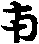生無有結業。生因已盡故。於三界人天具三身義。第四地上忍。於欲界但一應身。更無有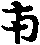身。於上二界具三身也。尋中下忍。意可知之。五地上忍於二界。但一應身也。於上一界得有三身。中下兩忍尋之可知。六地上忍於三界中。但一應身。又依身不定。於三界外。則具三身。中下兩忍。尋之可知。七地以上於三界中。但一應身。於三界外具三界。於下[歹*肖]咸之。二云無有以願他愛[彳*束]生則逐。結[缶-山+小]不爾。但應生身故[乃-(必-心)+十]生也。而約地生多小者。依瓔珞經云。初地斷見諦煩惱。二地斷人中煩惱。三地斷天上煩惱。四地斷三禪以下煩惱。五地斷三寶以下煩惱。六地斷非相非非相煩惱者。例前可知。七地以上金剛心以下斷恒沙等煩惱。亦是可尋也。三今大乘明。如大經迦葉品。住忍法時。斷無量三惡道報。當知不從知緣而滅者。五善根已斷三惡道報故。今任十信中。無有於三惡道結業生義。亦是無有人天中結業生身。此舉三學果明之。自此已去。逐所斷或。有生身無生身。尋之可解。又中七信已上。依經斷見思兩習氣。或與無知或。判可知之。但三生身逐結業。生與應生可知之。但以願他愛狹生身。應必須業與願共方得受生身。無有但願力生義。何者何菩薩不願度一切眾生。而不得並被化者。唯有願而不得並受化者。彼眾生若無有自結業者。不蒙被化。若少有結業者。則被化入道也。問諸地菩薩作王云何。答依仁王波若經云。初地作四天王。二地作忉利天王。三地作炎摩天王。四地作兜率陀天王。五地作化樂天王。六地作他化自在天王。七地作初禪梵王。八地作二禪天王。九地作三禪天王。十地作四大靜王也。諸師云前三王通關三身生。後七王但一應身也。問十地有色無無云何耳。答解不同。一云六地已下有色相。或因未盡故。七地以上無色相。或因盡故。二云七地以下有色有習氣因故。八地以上無色習氣盡故。三云十地並有色。由或因故。常住佛無色。或因盡故。四云至佛有妙色。例如至佛妙心判此已現法身。論師多曰第三師說。今大乘明義。約彼名之至佛有色並是彼故也。若約中論之。非色非心等也。問十七地行者。答真諦三藏師如牽十七經。證有九訠義。彼論云。九品心故有第九訠。而此間不出此經。故難信。而开名目義。一名善心地。謂布施持戒等善心地。二者聞慧地。三者思慧地。四者脩慧地。此四種是欲界善心地。此三慧於三界分之段。與論釋不同段明。欲界有聞思兩慧。色界有思脩二慧。無色界但脩慧也。論意欲色二界具有三慧。無色界唯有脩慧。故彼論三慧品云。欲界色界一切也。無色界中唯有脩慧也。五者有心定地。謂四禪四無色定。六者無相定心地。謂無想定心說滅盡定。三地是凡夫定善心地故。七者聲聞地。八者緣覺地。九者十信地。十者十住地。十一者十行地。十二者捨小乘廻向大乘地。十三者大乘十迴向地。十四者十地。十五者佛地。如來相慧功德。十六者有餘涅槃地。十七者無餘涅槃也。二涅槃是斷德也。今謂非有餘非無餘。亦非智斷。強名無餘涅槃也。
料簡第三明時節劫數。
經中成明三劫一十里石或言四十里方石。用六欲天衣。人間日月三年一下拂石。盡石為一小劫也。六十里石。梵天衣六殊重。三年一下拂石盡。若為中劫也。然彼天無日月。以寶珠光明取开明珠以辨歲數也。八十里石。淨居天衣無餘兩重。亦三年一下拂方石盡。若為一大劫。亦無日月。取玸鏡光明有易曉脫以內數歲月也。然劫數亦不定。或言八千里八萬里方石。若為一大劫下一千一萬里石故自是大劫也。又華嚴經阿僧祇品云。略攝开要數明千萬為一億。為一那由他。千萬為一億為一那由他。千萬億那由他為一加那。千萬億加那為一頻婆。千萬億頻婆為一阿僧祇。僧祇此云不可得。不可說不可量也。諸法師云。前萬里石若為大劫。即是一阿僧祇也。今明此大劫約地位。辨行行久近經數之少多者。從十信發心供養熈連河沙佛一劫。得到中十信。以中十信二劫到習種性之初。從習種性經三劫行得慧性種性。性種性故經四劫得到道種性。道種性經五劫。得到初地。初地經六劫得到二地。二地經七劫。得到三地。三地經八劫。得到四地。四地經九劫得到五地。五地經十劫得到六地。六地經十一劫得到七地。七地經十二劫。得到八地。八地經十三劫得到九地。九地經萬劫得到十地。十地經百劫。學佛威儀得到佛地也。出本業瓔珞經。作如此都合一萬一千八百四十劫。行行方得到佛地也。若如二乘人。八萬劫乃到十千劫。行行到中十信位也。依仁王經。判地前到佛中間劫數。大准望相似後結掫始終經無量劫。但從十地。到金剛心到佛。此與本業經。不[ㄊ/(巾-〡+串)]倍校言。若為釋者。諸法師云。本業經據大劫為明也。仁王經取中劫為暗。故兩經文文不相妨也。又依莊嚴楞伽藏經云。於一一地中。經百千大劫。方成一地之門。不數軟根者也。着爾時節即不事定也。
金剛心義。有四重(第一明大意。第二釋名第三出體。第四科簡)。
第一大意。經論所明金剛心者。乃是借譬之名。以況事理二種也。何者。一是以況於窮學之地等學也。二是以況於不二之道也。所以此兩意者。開橫豎之宗致。即是具中假。方得秤金剛。非中假則非金剛也。金剛有多義。要略有堅有利二能也。一者金剛妙寶體有堅故。眾物所不能傷也。二者能有利故。所擬皆破。物無不破也。金正法遠離一切趣不趣也。故況之為堅。洞遣是非。故譬之無不破為利也。又等覺之地眾累斯盡。故言無不破。故言利。眾或所不能侵為堅。故言金剛心。如金剛妙寶用利體堅也。
第二釋名。金剛心者。堅利為義。正法道百非所不非。百是所不是。故言堅實為義。所擬無不破。言利為義亦是十地上忍勝身菩薩。所擬無不破故。堅利為義也。心者有二意。一者正道為心。故大經云。阿耨多羅三藐三菩提心也。二者欲脩心法。更非遠物。心是迷悟之主故。眾生神明研脩。悟此心非心。入理之門為心。又得果之心。故秤金剛心也。
第三明出體。金剛心有二種。一者正法為體。二者橫而為論之。終學之地。照斯圓萬累都盡。空有兩解為體。兩用之中。亦得言常解為主也。若言望堅正道則二法並是假用非體。問金剛心體位云何。答解不同。一云窮學地。窮學地又說不同。一云窮學望結望故。名為金剛。體位言。約作用極邊。受金剛體位名。故如金剛寶瓶即足無缺也。三建初云。通因果為金剛體。彼意取波若經云。引燃燈佛所空所得。此證因前。以為金剛。從彼經故。文云。於燃燈佛所。無所得菩提。此證果前為金剛位也。彼師等定因果處所。故作此說。今謂不二而二論之。聖大論波若。非二乘法。又非佛法者者因。名為波若者果。若為菩薩婆若者。因為波若。果為菩薩若。若望大經片昔曰三照為涅槃者。波若通果地若論正法。波若如大火聚者。非因非果也。金剛心正約因。為金剛心也。
第四料簡。問前云金剛心者。拔闍羅薩埵而金剛有多義。要略有能何者多義耳。答世間金剛者。清淨為義。無有穢濁故。二者窮勝為義。諸寶中勝故。三者難惻為義。一切世間無能本價故。四者難得為義。如世間金剛貧人。所不能得故。五者有勢為義。如轉於聖王。金輪寶飛行自在。有大力勢故。六者不定為義。金剛若置諸色中。隨色變無定故。七者主為義。如轉輪王金輪寶為眾寶之主。一切諸寶悉皆隨從也。八者能集為義。如世間金剛。若得者。一切寶物自在聚集教。九者莊嚴莊教為義。如金剛能莊教。佛者法身首也。如此九種義。譬於金剛三昧之用。具如大經德王第六功德中說也。問世間金剛唯山羊角與龜甲二種。能傷損者。今橫堅二金剛。亦有非金剛義不。答世間金剛有兩種。能傷損。餘一切物莫能傷損者。亦有二義。一者偏。若餘物無傷損義。二者窮學金剛心。一切煩惱不能累。為譬唯生滅沒。況於二種物。今正法之道。遠離一切故。又諸有所得顛倒。於正觀中洗盡。故得秤為金剛也。成實論釋。能斷所斷不同。一云能所盡皆就相續假中論之。實法中則無也。所以知然。一念之起或。則自謝後。更不續故。是空無一等。云何決有能為累耶。故要須是相續不斷。能有[目*闇]鄣之用。以此義推。故所斷之或。要是相續道中明也。能斷之智亦是就相續明也。實法則無決有能滅之力也。二云解或寘理相違之法起。則於或之治為豈得言一違一不違耶。所斷之或。本觸成就。不名假明之。龍光傳開善義。成就長假無智。有念念謝滅。故不約實法論也。三釋恩傳建無云。按假談實能斷之解。假實俱能所斷之或。但假無實也。刀斷草木不例。何者刀斷木等。是色法故。能斷所斷。假實俱又云。刀斷木等既無成就故。約假明之。實法自在。故不假論能斷所斷也。解斷之或。但成就無有。念念生滅。唯有流動無常也。今大乘明義則不然。如十地大意中說。撿責我我所。了悟不得我與乘所。爾時理外容煩惱。尚得名為斷伏也。不如成實論等假實解實分汾云相斷伏也。問大品經差別品云。菩薩斷無礙道行。佛於解脫道行。兩行何相耶。答不二而二明之。金心為因。佛地為果。因無礙。果為解脫。而得名論師不得一南澗仙解云。舉義則無礙與解脫。舉因果別。金剛心當體是無礙。佛果當體是解脫。何者。金心伏源品或。或體無決有牽習果力與鄣解力釋因力直是是成就或體在既失三力於解牽習果無决有礙故。無礙義顯。故目金心。為無礙。既有或體。故不足秤解脫。解脫義不鄣也。既不礙於金心。金心習因牽起佛果。斷此彼伏源品或。逍然無礙故。解脫義顯。名為解脫也。二龍光綽師傳述開善義云。無礙解脫兩道。並是果地當體名何者。佛果斷或故。或不礙於解。名為無礙。解體逍然無累。名為解脫。帀由解脫故無礙。不由無礙故解脫。解脫勝於無礙。無礙劣於解脫。故解脫在果。無礙在因。何者如被縛故有礙。則不得云有礙故被縛故。解脫故無礙也。大乘宗明之。就假橫論之。如仙師釋。於名字中明之亦好。而彼處所被落無所得中大乘意。只了此有無心畢竟盡得名為解脫者。此有無心為被縛。若爾不起有無心體名。名無礙道。畢竟盡解。名為解脫道。義開為有。故經中不二而二云。菩薩無礙為行。佛為解脫中行。此是因果義。由因果。由果故因。因是果因。果是因果。故無因實於果。無果實於因。故無名相中。開兩為故無處所也。又如假故中無假實中無中實假所論云。亦假亦中。二為亦然之。問無礙解脫有傍正不。答不二而二。對境明之。兩種悉正。若開論之。劫或解脫為正。無礙為傍。若言於正行無有有所得。脫有所得。名為無礙。名為解脫者。則無有傍正。若從假入中。假為伏。亦是無礙為。是菩薩為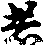者。正觀中名為斷。亦是解脫道。是佛道故。大品經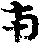十三卷一念品云。無所得即是道。即是果。即是阿耨多羅三藐三菩提故。菩薩頭經云。窮上利物菩薩初發心時便成正覺。不由次第。等覺妙覺。前念為因。後念為果。金剛聖體種知現前涅槃中究竟果也。問佛果所斷或滅時。即是佛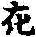時。若爾是或滅時解生時不。答成論師解不同。如十地義中說。一云解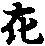時當佛果。所斷或滅當金心時。佛果與金心不問。云何言解生時是或滅時耶。金必或充別佛而金心已積伏或或無既三中不鄣金心牽習果。習果起或體自逍亡。逍亡時終當金心時不至佛。此義於十地義中已破竟也。二龍光述開善云。解生時。是或滅時。如苦忍時解生時。是或滅時。何者若忍邊成就。或體向無。苦忍向有。向有向無。非前後故。故言一時也。佛果斷源品惑者。此一處斷伏不同餘處。何者。此源品無明成終係於金心無明體終不假佛果。而言菩提智斷。無始或體者。如果起故因滅。若不應起者。因則不滅。由果應起。故因滅也。問若應起果能斷金心惑。此則應未有寂得未有解體能斷金心之已有或耶。答由果應向有故。金心邊或滅。若佛果不向有。金心成就或終無有滅由當佛果向有解向或逍亡。故推正與佛果羅斷源品無明。此源品或。雖係於金心。金心非其治道。故推佛果也。今大乘明義不同兩說。或體本來不生。今亦無滅。解亦然。善言或滅解生。解生或滅。作此動念心即是顛倒。豈能隔凡成聖。聖但假名開為解或明治而言方明之。如大論說。福將生惡滅者。得言或滅解生。而常解是所或。故或滅無所失。解生亦無所起。畢竟無迹。名為斷伏也。而觸位明之。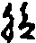既云菩薩無礙道行。解脫道行。故金心斷惑也。問經云金心所有相前如常中月。所有煩惱如烟微鄣。故智金心或未盡也。答此經意金心菩薩所逍盡煩惱如烟微鄣或不至佛故也。問金心菩薩。定有兩解。並不及佛耶。答論師常一往論之有解齊佛出解則不及佛一品。故金剛心等覺佛。若能而論之。有解亦有明昧。何者金心雖得冊吾品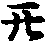金心。猶及或體故有解。昧於佛地。佛地無或故明也。問金心及解與佛道解等者。二地無淺深耶。答釋不同。一南澗仙師云。境上有淺深之義。故妙覺等覺兩智有淺義。等覺但伏不斷。便羅窮顯段得與佛一等。而淺深之處。既難智故要除或方得覩深處。又帶無常故。唯佛窮也。答彼舊云或是一品。而於境上。自有難易故也。二龍常師云。約有解明之。一往論之。無難易。淺深一等故。言等覺佛。或體有兩力。一或體能鄣於解。二或體罷障用。用既被伏無既鄣解之用力牽果之用。如死人無所能為。或望於解傍緣故或體雖有而不能令解[日*闇]解既偏照了無二。但無常故。不及為昧。又常無常殊耳。今大乘明義。無二而二。假名名字。開為淺深。勝劣明明得有多種勢也。因有三義。一因滿。二元無明向無。三果釋具足三義故昧也。果亦有三義。一果滿。二無或體。三極果。故明也。何以故知之。經云後身菩薩。但見終。不見始。亦故身菩薩小見。故又瓔珞經云。金剛心菩薩百劫者。學佛威儀。故知昧佛也。若無上多義。即應佛等而逐緣昧也。問此金心菩薩明解那得生耶。答論云。要以由金剛前心。了明解未能除或。由映潤故得生金剛心令有也。問伊既此一品或生。伊得起時。那忽反能伏除耶。答得有如此者。良由伊積此前心明力。雖既為伊所生。要由前既解力。後微微增勝。所以還復能有除力也。無異況從木生。還復能有燒木之用。以此義惟解由或有而復能除也。大乘明義。金心之前。細有所得潤起金心。金心有所得心盡者。金剛心解向有或向無故假名。名字開之。無不如斯種種義但意永異論師等說今雖言由或有之不有有除而不除除並是若方便。又論師釋金心斷或盡不盡。古今諸法師相傳不同。莊嚴等師傳述。金剛心斷或盡。但傳無常義異於佛。彼義宗佛若二諦之外源品無明。是或因所得故。金心所斷故。何者或因即空是真諦。金剛心體源品或名為斷或。佛是至有有真有出二諦外。故不斷也。故菩薩瓔珞本業經。釋義品云。金剛心菩薩登大山頂。入百千三昧。集佛威儀用坐處其知見。亦常無常。一切境智。當知如佛名為學佛也。而經中云。佛菩提智斷者。覺佛菩提斷也。問若金剛菩薩斷或盡。佛無異者。何經云如佛名為覺佛。則應言是佛也。又金剛心彼映潤起以不。答斷或盡則無或。映潤起若是[舟*火]映潤則斷或未盡之。大乘宗如夫人經云。佛菩提智所斷。故是金心已斷或盡。佛則無所斷也。而十住斷結經云。金剛心菩薩智慧如定中曰所有煩惱如烟微鄣。此則所斷或。如烟微鄣。非猶有或如烟微鄣也。二開善等諸師。傳述。金心斷或未盡。唯佛菩提方盡。故大品經差別品云。菩薩無礙道中行。諸佛解脫中行。解脫於或。即是斷或。故斷結經云。諸佛解脫道中行。是斷或也。亦如夫人經等所說也。亦道理明之。解惑相對。理應然也。又難云。若金心斷惑盡即應是佛。何故猶是因。今何故然無既有惑累故也。莊嚴家難金剛心解未足。猶有體存。故則應為集諦。佛苦無常等耶。開善義答。或惑應佛苦等但被伏故。無復能為故。大明至苦果等不來也即是因果不遂義。故彼家義。從七地中忍已上。有惑因無果因果不隨義也。又大乘明義。念念惑果有成就因緣差不惑亦得因果不隨義也。問若金剛心斷或不盡何得名金剛耶。答解不同。仙公云。雖金剛或未盡。而眾或所不累故。秤金剛也。又彼云。金剛心罷伏斷。非一念力。如刀斫續假用也。龍光傳開善義。只一念自是假則能伏斷也。仙公義假不當前後綽公義假當於後各執不同也。問金剛不可破壞者。此心不及得言暗[日*閏]由窮微或豈非微或使令然身既使其[日*閏]則有損亦瘵義則非金剛也。答金剛心解體內是明解非暗。乃是小明而不及佛真明。故相待言暗。不同凡夫相或入體中也。問解體是解非或者。在忍歡喜等門應名之。金剛體無或故也。答通乘得有此義。但約位分別者。其體不可破。而能破或盡。一種已滿。唯在金心獨受金剛名也。大乘義就橫疎論了並同有了但得同意。如空中鳥跡明義故。水異彼有所同義。大乘明義。解或相治。假上明之。故一家宗云。金剛心。正論相治。佛則逍然無果也。故大品經第五卷。發趣品最末云。菩薩摩訶薩行六波羅蜜。四念處。乃至十八不共法。一切種智具足滿斷煩惱。及習住十地。當知如佛也。而今兩佛異者有四。一因滿果滿異也。二小見多見異。三常無異。四解或並不並異。有四義故。有明昧異。如前說。而經云等覺者。等見與等滿故等。而實不等也。問就勝者為談。佛是金剛體。怪諸法盡更無餘故也。答義實爾。故大經第三卷金剛身品明。佛是金剛。但尋此品意。唯取其常不可破壞義為金剛。不論罷功以顯彼滿足無用也。問窮學是金剛。其既有無常。寧譬金剛耳。答無差別差別明之。實是後心。方是真金剛。但隨分明無非金剛也。亦得當體分有之亦得言。問金剛更名耶。答要有四名。一名金剛心如前。二金剛三昧。三金剛身。四金剛慧。亦同當體分有身亦得言前兩從因緣遠因於心近緣於定後二體用也。身即是體名。慧是屬用名也。問大經出幾名。答有五名。一名首楞嚴。此言曾伏。亦言究竟。亦言健定。亦名脩治也。二者金剛譬於堅利。三名波若。亦得名當體名亦約智慧也。四名師子吼。譬於無畏說。五名佛性亦得言當體。亦得言因果也。彼經意隨用得有無量名。問彼跋闍羅此言金剛。金剛定是何物。答成言是勝金成言是利鐵也。問此金剛心金。與金堅之金金身品金金光明之金。若為同異。答不同不異。一往彈之而亦得言金光之金。與金剛身品之金。並就果地法身明之。故大經答云。金剛身因果。明法身常住不可破壞。猶如金剛。明護法為因能得此法身果。舉果辨因也。金光明之金。譬法身。明懺悔施食不然等所得但總別異也。金堅之金。有二義。一正法明之。一約因中明之。果則薩婆若。故金剛心之金。約等覺論也。金堅之金。雖云薩婆若明明之。是因而因中舉於下地也。若言摩訶婆若。亦非涅槃意。亦通果地也。十地金剛心義竟。
無依無得大乘四論記卷第二